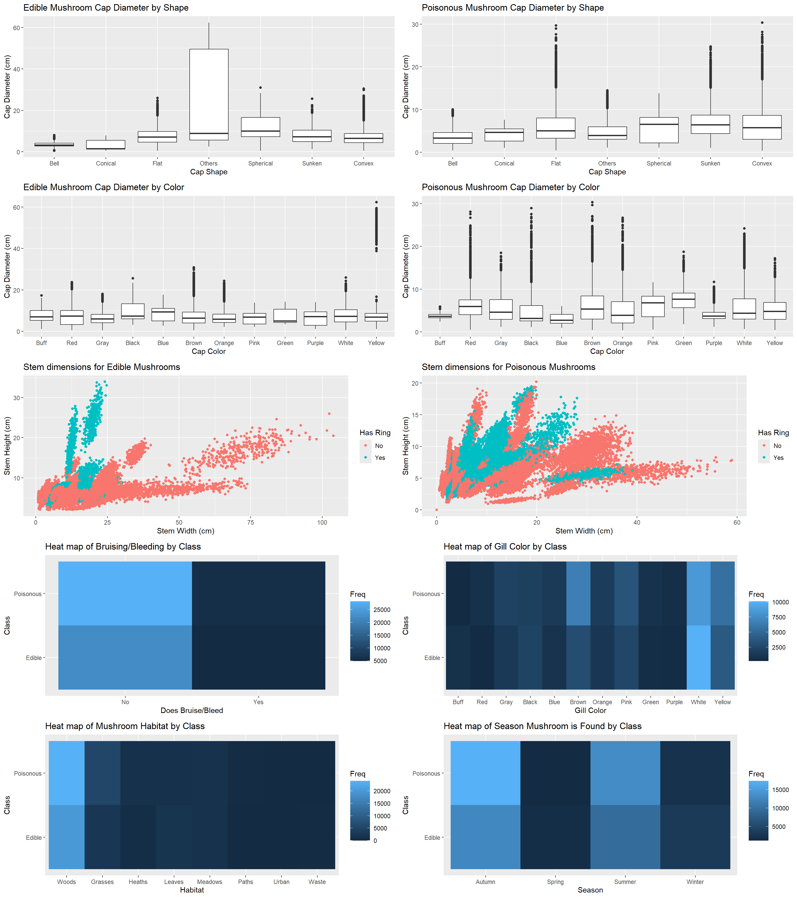
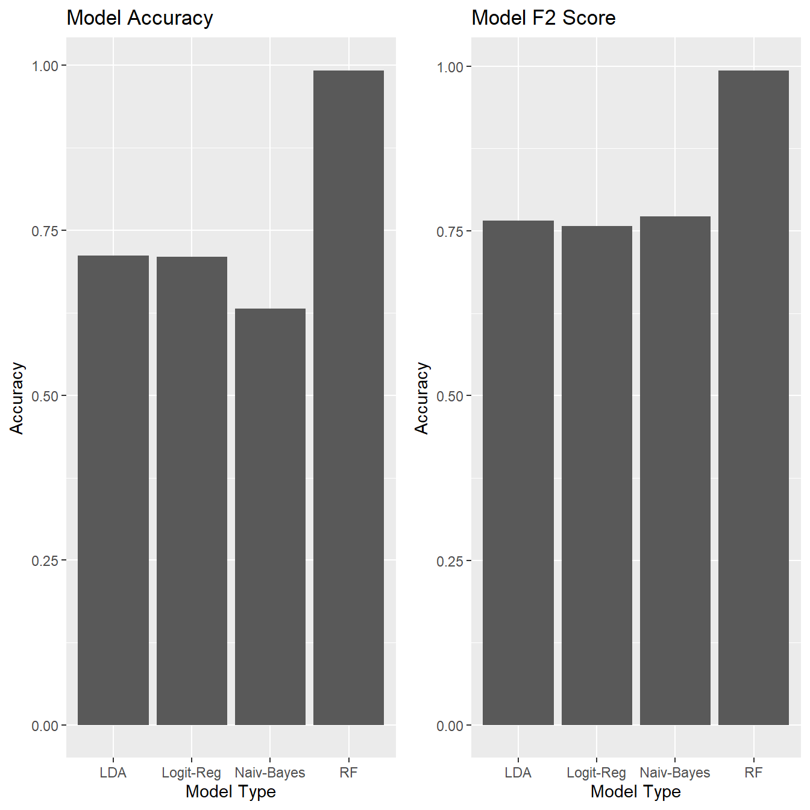
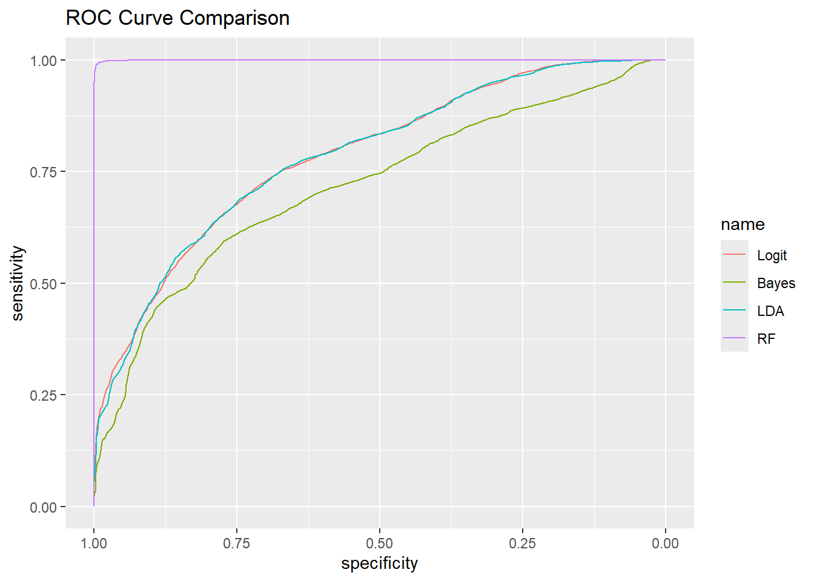
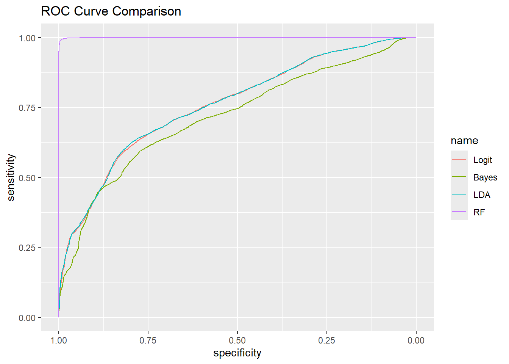

## Used packages that need to be installed to run code (and can be sourced easier from CRAN):
needed_packages <- c("tidyverse", "tidymodels", "knitr", "ggpubr", "pROC", "GGally", "caret", "caTools", "e1071", "MASS", "randomForest", "car") # Specify necessary packages
not_installed <- needed_packages[!(needed_packages %in% installed.packages()[ , "Package"])] # Extract not installed packages
if(length(not_installed)) install.packages(not_installed) # Install not installed packagesLab XX: Reproducibility
Due date
This lab is due on XX/XX. To be considered on time, the following must be done by the due date:
- Final
.qmdand.pdffiles submitted to Canvas
Reproducibility
In this lab, you will run code based on analysis in published studies. You will resolve any errors in the given code, detailing and fixing any differences in the provided analysis and the run code. Then, you will assess the reproducibility of the given analysis and document what errors and inconsistencies were encountered. The text excerpts used in this lab were adapted off Wagner, Heider, and Hattab (2021)
Learning goals
By the end of the lab you will be able to…
validate or invalidate the original findings of a research study
Reproduce the figures and analysis from a research study
Resolve errors common in code published from research studies
Assess the reproducibility of the study
Getting started
Packages
You will use the following packages in today’s lab. To install any missing packages, run the following chunk:
The following chunk will load the packages required:
library(tidyverse)
library(tidymodels)
library(knitr)
library(ggpubr)
library(pROC)
library(GGally)
library(caret)
library(caTools)
library(e1071)
library(MASS)
library(randomForest)
library(car)Data
The data in this lab contains measures describing the physiology of hypothetical edible and poisonous mushrooms. The secondary set was developed based on the species listed in a mushroom identification text book and results of a dataset developed by UCI in 1987. They simulated several characteristics based on this information. The data were orginally presented and analyzed in Wagner, Heider, and Hattab (2021) and was obtained from the UCI Machine Learning Repository.
This analysis includes the following variables (after data cleaning and renaming):
cap-diameter: diameter of mushroom cap measured in cmcap-shape: bell, conical, convex, flat, sunken, spherical, otherscap-color: brown, buff, gray, green, pink, purple, red, white, yellow, blue, orange, blackdoes-bruise-or-bleed: yes, nogill-color: see cap colorstem-height: height of stem measured in cmArea: size of the rice grain measured in pixelsstem-width: width of stem measured in mmstem-color: see cap colorhas-ring: yes, nohabitat: grasses, leaves, meadows, paths, heaths, urban, waste, woodsseason: spring, summer, autumn, winter
Click here for the full data dictionary.
Exercises
Goal: The goal of the analysis is to resolve any errors or add any code necessary to validate and reproduce the provided figures.
Exercise 0
A primary issue in reproducibility is the public availability of code and raw data in published literature. To improve the reproducibility, many authors link a GitHub repository in their study. For the following reproducibility lab, the GitHub is linked as follows: https://github.com/jpro1219/Reproducibility-Lab
git clone https://github.com/jpro1219/Reproducibility-Lab
Clone the repository to your system and then move the data file mushrooms.csv into your data structure. Then read the data into the system.
(Possible errors to put in: do not convert NA strings, do not put in semicolons as separators)
mushrooms <- read.csv("data/mushrooms.csv", sep=';', na.strings=c("", "NA")) # Convert empty strings to NAExercise 1
Data cleaning: removing columns with missing values, removing columns with unknown category, renaming categorical variables, turning class into factor
Possible errors: Changing poisonous to be 1, nonpoisonous to 0, allowing students to figure out that stem color contains an unknown value, skipping one or two values in categorical data
## Remove columns with missing values
cleaned_mushrooms <- mushrooms
for (colname in colnames(mushrooms)){
if (sum(is.na(mushrooms[colname])) != 0){ # Columns with 1 or more missing values
cleaned_mushrooms[colname] <- NULL
}
}
## Remove column with extraneous category
cleaned_mushrooms <- subset(cleaned_mushrooms, select = -stem.color) # Stem color contained one unknown value
## Renaming categorical variables for clear identification
cleaned_mushrooms$class <- factor(cleaned_mushrooms$class)
levels(cleaned_mushrooms$class) <- c("Edible", "Poisonous")
cleaned_mushrooms$does.bruise.or.bleed <- factor(cleaned_mushrooms$does.bruise.or.bleed)
levels(cleaned_mushrooms$does.bruise.or.bleed) <- c("No", "Yes")
cleaned_mushrooms$has.ring <- factor(cleaned_mushrooms$has.ring)
levels(cleaned_mushrooms$has.ring) <- c("No", "Yes")
cleaned_mushrooms$cap.shape <- factor(cleaned_mushrooms$cap.shape)
levels(cleaned_mushrooms$cap.shape) <- c("Bell", "Conical", "Flat", "Others", "Spherical", "Sunken", "Convex")
cleaned_mushrooms$cap.color <- factor(cleaned_mushrooms$cap.color)
levels(cleaned_mushrooms$cap.color) <- c("Buff", "Red", "Gray", "Black", "Blue", "Brown", "Orange", "Pink", "Green", "Purple", "White", "Yellow")
cleaned_mushrooms$gill.color <- factor(cleaned_mushrooms$gill.color)
levels(cleaned_mushrooms$gill.color) <- c("Buff", "Red", "Gray", "Black", "Blue", "Brown", "Orange", "Pink", "Green", "Purple", "White", "Yellow")
cleaned_mushrooms$habitat <-
factor(cleaned_mushrooms$habitat)
levels(cleaned_mushrooms$habitat) <- c("Woods", "Grasses", "Heaths", "Leaves", "Meadows", "Paths", "Urban", "Waste")
cleaned_mushrooms$season <-
factor(cleaned_mushrooms$season)
levels(cleaned_mushrooms$season) <- c("Autumn", "Spring", "Summer", "Winter")
## Adding category for class as a binary variable
cleaned_mushrooms <- cleaned_mushrooms |>
mutate(
binary_class = as.factor(if_else(class == "Poisonous", 1, 0)))Exercise 2
Exploratory data analysis
Possible error: having one variables’ values negated in the data file
## Plotting quantitative variables
cap_edible_plot <- ggplot(subset(cleaned_mushrooms, class == "Edible"), aes(cap.shape, cap.diameter)) +
labs(title="Edible Mushroom Cap Diameter by Shape", x="Cap Shape", y="Cap Diameter (cm)") +
geom_boxplot()
cap_poison_plot <- ggplot(subset(cleaned_mushrooms, class == "Poisonous"), aes(cap.shape, cap.diameter)) +
labs(title="Poisonous Mushroom Cap Diameter by Shape", x="Cap Shape", y="Cap Diameter (cm)") +
geom_boxplot()
cap_color_edible_plot <- ggplot(subset(cleaned_mushrooms, class=="Edible"), aes(cap.color, cap.diameter)) +
labs(title="Edible Mushroom Cap Diameter by Color", x="Cap Color", y="Cap Diameter (cm)") +
geom_boxplot()
cap_color_poison_plot <- ggplot(subset(cleaned_mushrooms, class=="Poisonous"), aes(cap.color, cap.diameter)) +
labs(title="Poisonous Mushroom Cap Diameter by Color", x="Cap Color", y="Cap Diameter (cm)") +
geom_boxplot()
edible_plot <- ggplot(subset(cleaned_mushrooms, class == 'Edible'), aes(x = stem.width, y = stem.height, color= has.ring)) +
labs(title="Stem dimensions for Edible Mushrooms", color="Has Ring", x="Stem Width (cm)", y="Stem Height (cm)") +
geom_point()
poison_plot <- ggplot(subset(cleaned_mushrooms, class == 'Poisonous'), aes(x = stem.width, y = stem.height, color=has.ring)) +
labs(title="Stem dimensions for Poisonous Mushrooms", color="Has Ring", x="Stem Width (cm)", y="Stem Height (cm)") +
geom_point()
## Plotting categorical variables
bruise_bleed <- as.data.frame(table(cleaned_mushrooms$does.bruise.or.bleed, cleaned_mushrooms$class))
bruise_plot <- ggplot(bruise_bleed, aes(Var1, Var2, fill=Freq)) +
labs(title="Heat map of Bruising/Bleeding by Class", x="Does Bruise/Bleed", y="Class") +
theme(legend.key.width = unit(1, 'cm')) +
geom_tile()
gill_color <- as.data.frame(table(cleaned_mushrooms$gill.color, cleaned_mushrooms$class))
gill_color_plot <- ggplot(gill_color, aes(Var1, Var2, fill=Freq)) +
labs(title="Heat map of Gill Color by Class", x="Gill Color", y="Class") +
theme(legend.key.width = unit(1, 'cm')) +
geom_tile()
habitat <- as.data.frame(table(cleaned_mushrooms$habitat, cleaned_mushrooms$class))
habitat_plot <- ggplot(habitat, aes(Var1, Var2, fill=Freq)) +
labs(title="Heat map of Mushroom Habitat by Class", x="Habitat", y="Class") +
theme(legend.key.width = unit(1, 'cm')) +
geom_tile()
season <- as.data.frame(table(cleaned_mushrooms$season, cleaned_mushrooms$class))
season_plot <- ggplot(season, aes(Var1, Var2, fill=Freq)) +
labs(title="Heat map of Season Mushroom is Found by Class", x="Season", y="Class") +
theme(legend.key.width = unit(1, 'cm')) +
geom_tile()
## Compile all plots into figure, organized by part of mushroom
ggarrange(cap_edible_plot, cap_poison_plot, cap_color_edible_plot, cap_color_poison_plot, edible_plot, poison_plot, bruise_plot, gill_color_plot, habitat_plot, season_plot, nrow = 5, ncol = 2)
ggsave("Figures/Figure1_Exploratory.png", width = 20, height = 25)Exercise 3
Creating training and test sets for our data analysis
Possible errors: Change numbers but comment the correct
## Set seed to 105
set.seed(105)
## Take 75% of the cleaned mushrooms set for the training set, the remaining for the test set
mushroom_numbers <- sample(seq_len(nrow(cleaned_mushrooms)), size = 0.75*nrow(cleaned_mushrooms))
mushroom_train <- cleaned_mushrooms[mushroom_numbers,]
mushroom_test <- cleaned_mushrooms[-mushroom_numbers,]Exercise 4
Measuring covariance of the variables
Possible error: Add variable that has already been removed
## Create regression model with all variables, no interaction terms to keep all uniform
logit_reg_model <- glm(binary_class ~ stem.height + cap.diameter + cap.shape + cap.color + does.bruise.or.bleed + gill.color + stem.width + has.ring + habitat + season, data = mushroom_train, family = "binomial")
vif_values <- vif(logit_reg_model)
kable(vif_values, digits = 3)| GVIF | Df | GVIF^(1/(2*Df)) | |
|---|---|---|---|
| stem.height | 1.934 | 1 | 1.391 |
| cap.diameter | 2.730 | 1 | 1.652 |
| cap.shape | 4.030 | 6 | 1.123 |
| cap.color | 3.189 | 11 | 1.054 |
| does.bruise.or.bleed | 1.286 | 1 | 1.134 |
| gill.color | 6.756 | 11 | 1.091 |
| stem.width | 2.576 | 1 | 1.605 |
| has.ring | 1.314 | 1 | 1.146 |
| habitat | 1.531 | 7 | 1.031 |
| season | 1.220 | 3 | 1.034 |
Exercise 5
Training our other models
Possible error: Remove a variable from one or more so that they are not uniform
naive_bayes_model <- naiveBayes(binary_class ~ stem.height + cap.shape + cap.diameter + cap.color + does.bruise.or.bleed + gill.color + stem.width + has.ring + habitat + season, data = mushroom_train)
lda_model <- lda(binary_class ~ stem.height + cap.diameter + cap.shape + cap.color + does.bruise.or.bleed + gill.color + stem.width + has.ring + habitat + season, data = mushroom_train)
rf_model <- randomForest(binary_class ~ stem.height + cap.diameter + cap.shape + cap.color + cap.diameter + does.bruise.or.bleed + gill.color + stem.width + has.ring + habitat + season, data = mushroom_train)Exercise 6
Creating predictive probabilities and classes
Possible Error: Use an incorrect threshold
## Find probabilities and classify with standard threshold
logit_pred_prob <- predict.glm(logit_reg_model, newdata=mushroom_test, type="response")
logit_pred_class <- factor(ifelse(logit_pred_prob >0.50, 1, 0))
bayes_pred_prob <- predict(naive_bayes_model, newdata = mushroom_test, type = "raw")
naive_bayes_pred_class <- predict(naive_bayes_model, newdata = mushroom_test)
lda_pred_prob <- predict(lda_model, newdata = mushroom_test, type = "prob")
lda_pred_class <- predict(lda_model, newdata = mushroom_test)
rf_pred_prob <- predict(rf_model, newdata = mushroom_test, type = "prob")
rf_pred_class <- predict(rf_model, newdata = mushroom_test)Exercise 7
Creating and plotting confusion matrices
Possible Error: Rows/columns
## Compile all plots into figure, organized by part of mushroom
bayes_conf <- as.data.frame(table(mushroom_test$binary_class, naive_bayes_pred_class))
bayes_conf_plot <- ggplot(bayes_conf, aes(Var1, naive_bayes_pred_class, fill=Freq)) +
labs(title="Naive Bayes Confusion Matrix", x="True Class", y="Predicted Class") +
theme(legend.key.width = unit(1, 'cm')) +
geom_tile()
logit_conf <- as.data.frame(table(mushroom_test$binary_class, logit_pred_class))
logit_conf_plot <- ggplot(logit_conf, aes(Var1, logit_pred_class, fill=Freq)) +
labs(title="Logistic Regression Confusion Matrix", x="True Class", y="Predicted Class") +
theme(legend.key.width = unit(1, 'cm')) +
geom_tile()
lda_conf <- as.data.frame(table(mushroom_test$binary_class, lda_pred_class[['class']]))
lda_conf_plot <- ggplot(lda_conf, aes(Var1, Var2, fill=Freq)) +
labs(title="LDA Confusion Matrix", x="True Class", y="Predicted Class") +
theme(legend.key.width = unit(1, 'cm')) +
geom_tile()
rf_conf <- as.data.frame(table(mushroom_test$binary_class, rf_pred_class))
rf_conf_plot <- ggplot(rf_conf, aes(Var1, rf_pred_class, fill=Freq)) +
labs(title="rf Confusion Matrix", x="True Class", y="Predicted Class") +
theme(legend.key.width = unit(1, 'cm')) +
geom_tile()
ggarrange(bayes_conf_plot, logit_conf_plot, lda_conf_plot, rf_conf_plot, nrow = 2, ncol = 2)
ggsave("Figures/Figure2_ConfMats.png", width = 20, height = 15)Exercise 8
Accuracy and F2
Possible errors: mess with ggarrange, write function for accuracy, f2 and flip them
## Calculate accuracy and f2 from the confusion matrix
TN <- logit_conf[1,3] # Set all values on conf matrix
FP <- logit_conf[3,3]
FN <- logit_conf[2,3]
TP <- logit_conf[4,3]
precision <- TP/(TP + FP) # Apply formula for precision and recall (to plug into f2 score calculation)
recall <- TP/(TP + FN)
accuracy_logit <- (TP + TN) / sum(logit_conf[,3])
f2_logit <- (1 + 2^2)*precision*recall/((2^2*precision) + recall)
TN <- bayes_conf[1,3] # Set all values on conf matrix
FP <- bayes_conf[3,3]
FN <- bayes_conf[2,3]
TP <- bayes_conf[4,3]
precision <- TP/(TP + FP) # Apply formula for precision and recall (to plug into f2 score calculation)
recall <- TP/(TP + FN)
accuracy_bayes <- (TP + TN) / sum(bayes_conf[,3])
F2_bayes <- (1 + 2^2)*precision*recall/((2^2*precision) + recall)
TN <- lda_conf[1,3] # Set all values on conf matrix
FP <- lda_conf[3,3]
FN <- lda_conf[2,3]
TP <- lda_conf[4,3]
precision <- TP/(TP + FP) # Apply formula for precision and recall (to plug into f2 score calculation)
recall <- TP/(TP + FN)
accuracy_lda <- (TP + TN) / sum(lda_conf[,3])
F2_lda <- (1 + 2^2)*precision*recall/((2^2*precision) + recall)
TN <- rf_conf[1,3] # Set all values on conf matrix
FP <- rf_conf[3,3]
FN <- rf_conf[2,3]
TP <- rf_conf[4,3]
precision <- TP/(TP + FP) # Apply formula for precision and recall (to plug into f2 score calculation)
recall <- TP/(TP + FN)
accuracy_rf <- (TP + TN) / sum(rf_conf[,3])
F2_rf <- (1 + 2^2)*precision*recall/((2^2*precision) + recall)
## Plot accuracy and F2 together
models <- c("RF", "LDA", "Logit-Reg", "Naiv-Bayes")
accuracy <- c(accuracy_rf, accuracy_lda, accuracy_logit, accuracy_bayes)
f2 <- c(F2_rf, F2_lda, f2_logit, F2_bayes)
model_ratings <- data.frame(models, accuracy, f2)
Accuracy_plot <- ggplot(model_ratings, aes(x = models, y=accuracy)) +
labs(title="Model Accuracy", x="Model Type", y="Accuracy") +
geom_bar(stat = "identity")
F2_plot <- ggplot(model_ratings, aes(x = models, y=f2)) +
labs(title="Model F2 Score", x="Model Type", y="F2 Score") +
geom_bar(stat = "identity")
ggarrange(Accuracy_plot, F2_plot, nrow = 1, ncol = 2)
ggsave("Figures/Figure3_Scoring.png", width = 20, height = 10)
scoring <- data.frame(Model=c("Accuracy", "F2"), Bayes = c(accuracy_bayes, F2_bayes), Logit=c(accuracy_logit, f2_logit), LDA = c(accuracy_lda, F2_lda), RF = c(accuracy_rf, F2_rf))
kable(scoring, digits = 3)| Model | Bayes | Logit | LDA | RF |
|---|---|---|---|---|
| Accuracy | 0.631 | 0.684 | 0.681 | 0.992 |
| F2 | 0.771 | 0.733 | 0.734 | 0.993 |
Exercise 9
ROC Curves
Possible errors: Incorrect subscripts
## Create ROC plots for each
roc.logit <- roc(as.numeric(mushroom_test$binary_class), logit_pred_prob)
roc.bayes <- roc(as.numeric(mushroom_test$binary_class), bayes_pred_prob[,2])
roc.lda <- roc(as.numeric(mushroom_test$binary_class), lda_pred_prob$posterior[, 2])
roc.rf <- roc(as.numeric(mushroom_test$binary_class), rf_pred_prob[,2])
## Combine all roc plots into one graph
ggroc(list(Logit = roc.logit, Bayes = roc.bayes, LDA = roc.lda, RF = roc.rf)) +
labs(title = "ROC Curve Comparison")
ggsave("Figures/Figure4_ROCCurve.png", width = 15, height = 10)Exercise 10
Table with AUCs
Possible error: Give wrong table
## Create table with aucs of the rocs
aucs <- data.frame(method=c("Logistic Regression", "Naive Bayes", "LDA", "RF"), auc=c(auc(roc.logit), auc(roc.bayes), auc(roc.lda), auc(roc.rf)))
kable(aucs, digits = 3)| method | auc |
|---|---|
| Logistic Regression | 0.759 |
| Naive Bayes | 0.717 |
| LDA | 0.760 |
| RF | 1.000 |
References
Wagner, Dennis, Dominik Heider, and Georges Hattab. 2021. “Mushroom Data Creation, Curation, and Simulation to Support Classification Tasks.” Scientific Reports 11 (1): 8134. https://doi.org/10.1038/s41598-021-87602-3.